Published: 2022-08-05
Source link: https://www.cnphotos.net/academy/show-75.html
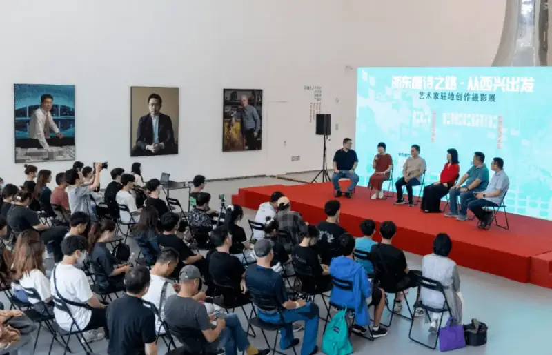
Host: Zhang Hailong
Discussion: Mao Xiaofang, Zhang Youguo, Shen Ke, Qi Xiangyang, Li Xiaojun
Time: afternoon of June 8, 2022
Host:Dear teachers and students here today, hello. Welcome to the dialogue salon for the artist-in-residence photography exhibition The Tang Poetry Road of Eastern Zhejiang: Starting from Xixing.
First let me introduce today's guests: Mao Xiaofang, standing vice chairman of the Zhejiang Photographers Association; Zhang Youguo, vice chairman of the Zhejiang Photographers Association and chairman of the Hangzhou Photographers Association; Qi Xiangyang, head of the organization department of the Hangzhou Federation of Literary and Art Circles and secretary-general of the Hangzhou Photographers Association; Shen Ke, curator of this exhibition; and Li Xiaojun, chairman of the Binjiang District Photographers Association.
I am Zhang Hailong, host of today's salon. Xixing in Hangzhou is itself the node of Zhejiang's poetry roads. The Tang Poetry Road of Eastern Zhejiang, the Grand Canal poetry road, and the Qiantang River poetry road all meet here. Xixing is the center point of the age-old prosperity of the Qiantang, and it is also the starting point of the Eastern Zhejiang Canal and of the Tang Poetry Road of Eastern Zhejiang.
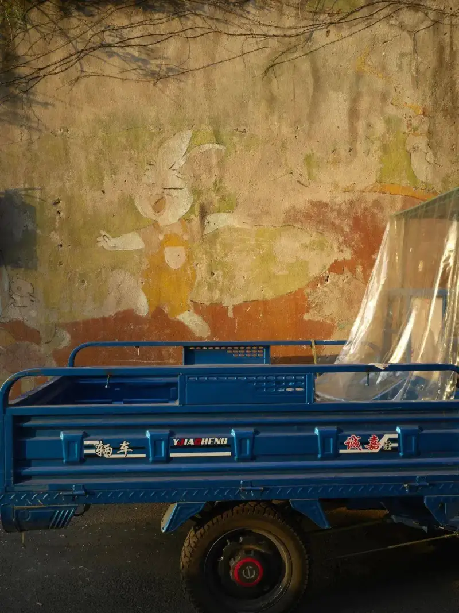
© Yan Jianzhong (Jinhua), Xixing Wall.
100X133cm. 11 works shown.
To open, I want to guide us into a discussion. Let us look together at the artistic tension between the theme Tang Poetry Road of Eastern Zhejiang and the idea of starting from Xixing.
Hello, Teacher Mao. In recent years you have led themed photography shows tied to Poetry Roads of Zhejiang, from Poetry Painting Zhejiang to the Tang Poetry Road of Eastern Zhejiang, from Spring Water as Blue: Qiantang River Poetry Road to the Ou River Landscape Poetry Road. From your point of view, how should we understand today's theme, the Tang Poetry Road of Eastern Zhejiang: Starting from Xixing,and how is this show like or unlike the shows that came before?
Mao Xiaofang:Hello all. In recent years, the provincial association has used professional photography to serve the center and the broader public. It has done a series of deep explorations and achieved solid results. Members who follow the association's work feel this deeply. From curation, to themed creation, to display, and to publishing, we keep taking on challenges. Some challenges come from outside, but most are self-imposed,as we steadily raise the professional standard of the work and the shows.。
In the past, the shows we saw sent out a call for entries, ran a review, and then hung framed pictures of a standard size on the wall.That kind of show no longer meets what a new era asks of an image exhibition.。
From the 2018 Tide Rises on the Qiantang photo show for the 40th anniversary of reform and opening, to the 2019 Lingyun Cup Tang Poetry Road of Eastern Zhejiang show, the 2020 Poetry Painting Zhejiang landscape show, the 2021 Spring Water as Blue: Qiantang River poetry road image show, and the Zhejiang red-landscape image show, up to today's artist-in-residence show at the Powerlong Museum, Starting from Xixing, and then the Song Charm Traces memory: Third Image West Lake art event at the Gongwang Art Museum at the end of August, the Mountains and Rivers Art Education: Searching for Ou: Ou River Landscape Poetry Road image show, and the Art Road to Common Prosperity Xiaoshan village image project. These are a series of shows by the Zhejiang photography world around the cultural poetry road belt, the Poetry Painting Zhejiang theme, and the art-road-to-common-prosperity village image project.
We used the professionalism of photography to serve the central work of the provincial party committee and government.What I stress here is professionalism in photography. These shows also won the consistent recognition of the Chinese Photographers Association, the provincial party propaganda department, and the provincial federation of literary and art circles.
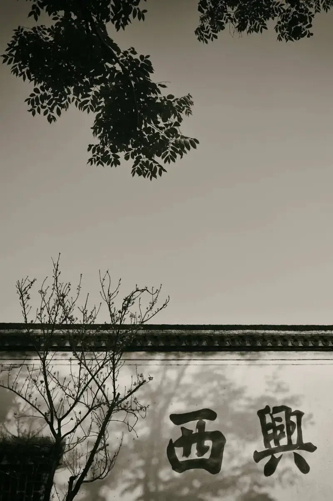
© Yang Xiaofa (Jinhua), Impressions of Xixing.
66X90cm. 6 works shown.
Our approach to themed creation is very clear: root it in the local, and keep a global view.
A few days ago in the council group, I said the workshops across the region are blooming like bamboo shoots after rain, and that we should root them in the local and do themed creation well. Teacher Zhao Gang immediately picked up: root it in the local, keep a global view.
The content is from Zhejiang, but the view is global.，How content and form organically transform and merge,is the important work we must explore further.
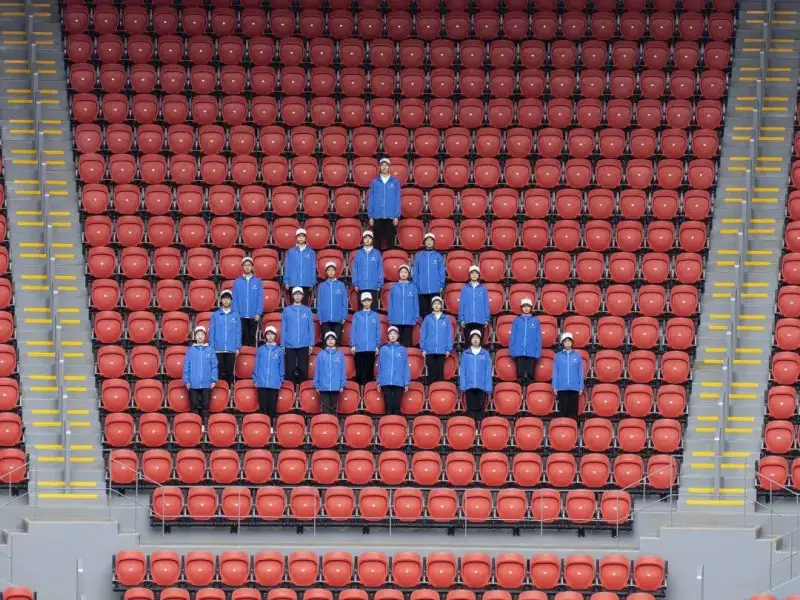
© Lou Ying (Hangzhou), Builders.
180X135cm. 8 works shown.
In short, there are two lessons.
First,use a professional curatorial team and group of curators well.。
Since 2018, behind every successful show there is a professional curatorial team. From the fine arts side, Liu Dian, Wen Zhenqi, and Song Zhenxi, and from our association, Fu Yongjun, Shen Ke, Liu Yiheng, Fan Shunzan, La Hei, and Zhang Wen, all did much for Zhejiang's major shows. Alongside the successful shows, these years Zhejiang has also trained a strong group of curators. So every show is worth seeing, and it draws the attention of leaders at all levels and the praise of members.
Second,do the front-end creation for themed shows solidly.。
In the past, shows used a call for entries cast like a net, and the selected works were scattered. Now each themed show does themed creation a year or two ahead. The Tang Poetry Road of Eastern Zhejiang show held four field trips. Teacher Fu Yongjun ran a full-year Qiantang River poetry road training camp. Last year's Zhejiang red-landscape image show held two village fieldwork workshops, in Anji and in Xiajiang village in Chun'an. It drew key members from all 11 cities of the province for resident village fieldwork, and then sent those trained members back to their own cities to run themed creation projects.
Ningbo ran the themed project Searching for the Eastern Zhejiang Radio, Jiaxing members retraced the First Congress route, and the Quzhou team of Wang Xueya and others returned to Kaihua to do themed creation.Behind every successful show is the deep and solid progress of themed creation,and this is a key factor.
This year's Song-charm Fuchun River themed project is rich. Last month we invited Ta Ke, Zeng Han, Zhang Lanpo, Qiu, and nearly 20 photographers in the province to do resident creation along the Fuchun River. (Related link: Song Charm Traces: 2022 Image West Lake art event front-end field creation ends.)
Next, the Questioning in the Mountain: Fuyang Song-charm paper-village Datong village contemporary art field study, led by Teacher Song Zhen of the Intermedia School of the China Academy of Art, will also open in Fuyang. (Related link: Provincial association, Fuyang, Song-charm paper-village Datong village resident creation plan, phase one ends.)
Doing the front-end themed creation project well is an important part of a successful themed show,and we must explore and practice it further.
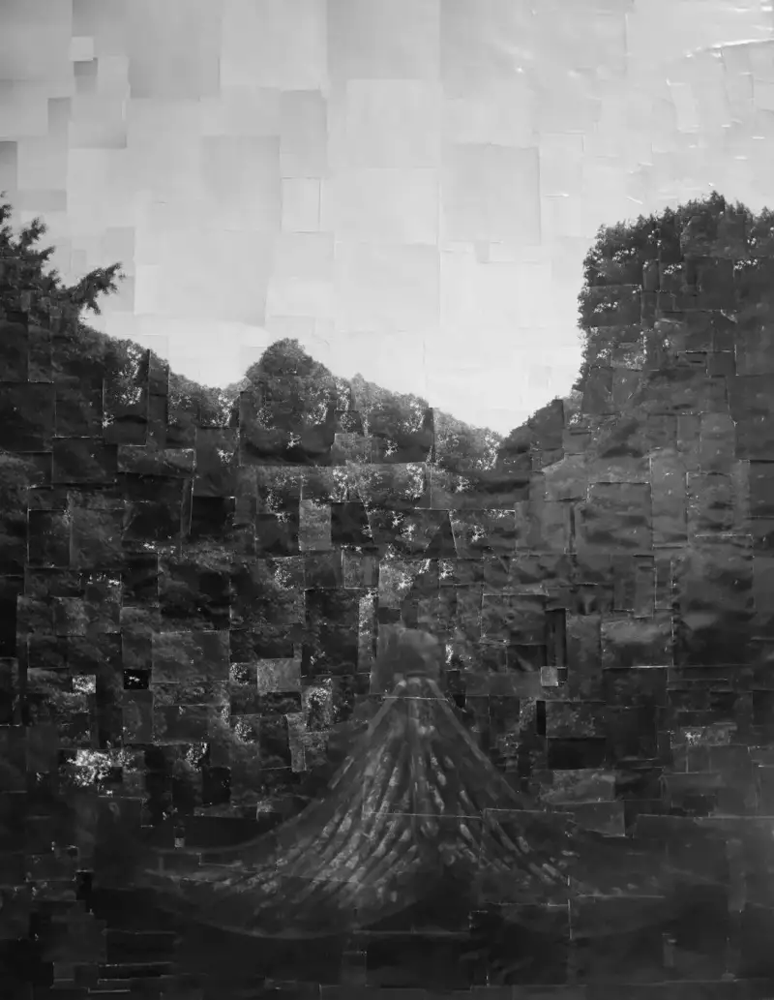
© Xu Chao (Hangzhou), Record of Xixing Objects.
120X156cm. Platinum, silver gelatin, and rubbing mixed. 10 works shown.
For the Hangzhou Photographers Association's Starting from Xixing artist-in-residence project, Chairman Zhang Youguo held several research meetings. From the academic seminar held in Xixing last year, to the launch of the artist resident creation training camp led by Teacher Shen Ke. The pandemic this year caused some delay, but all told more than half a year went in, and so we have today's rich show from upstairs to downstairs.
This show is also an organic part of the provincial association's themed series. We mustgrasp the careful design from curation, to themed creation, to display, to the opening events, so that all together they make a complete successful show.。
This morning I saw the show and spoke with curators and artists. I was glad to see the clear progress of Zhejiang photography in recent years. Many photographers have grown through resident creation and the grind of many shows. Wang Xueya's group portraits of foreigners in Binjiang won high praise from Teacher Lu Guang. Wang Xueya's achievement did not come in a day. These years she has learned and practiced on different association platforms, and she has grown fast.
We very much welcome the young people and members here to join the association's themed creation, viewings, workshops, training courses, and the New Peak Plan for young talent.The door of the provincial association is always open. You are welcome to learn, take part, and gain.I also thank Chairman Zhang and Secretary-General Qi of the Hangzhou association, as well as the curatorial team and the artists, for their work on this show. Thank you all.
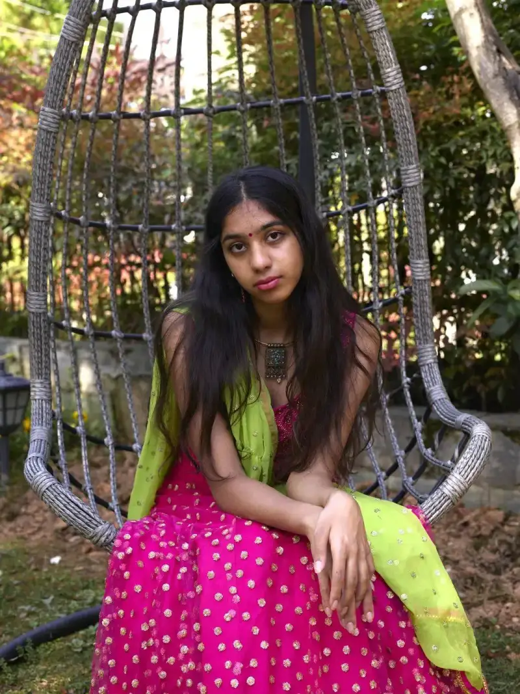
© Wang Xueya (Quzhou), Foreigners Living in Binjiang.
120X160cm. 13 works shown.
Host:Thank you, Teacher Mao. I notice that when you present the provincial association's big shows, the word water always appears. From the Fuchun River to the Ou River, from the Qiantang to the Grand Canal, Zhejiang rose because of water. So my second question goes to Chairman Zhang Youguo. For years you have photographed the Grand Canal, and now you led the Starting from Xixing show. The Zhejiang canal overlaps heavily with the Tang Poetry Road of Eastern Zhejiang. Crossing from the physical river to the spiritual poetry road, as the organizer of this show,how did you think through and launch a show called Starting from Xixing?
We know Xixing links the Qiantang River and the Grand Canal. Xixing is most famous for its guotang hang, or transit warehouses, which handled the transfer of goods and people when boats could not sail directly between the canal and the Qiantang. At their peak there were 72 guotang hang, with more than a thousand workers. Each handled a set type of cargo, including tea, tobacco, medicine, and silk. Long ago, the beauty Xishi crossed the river from Xixing to go from the Yue kingdom to the Wu kingdom. Fan Li stationed troops here, and the place was called Guling, and later it became Xixing. So many cultural layers rest here. Chairman Zhang, please talk about your inner path.Starting from Xixing, where did it first start, and where is it going? You say today's show is only a first summary, so what comes next?
Zhang Youguo:Starting in 2018, under the Hangzhou Federation of Literary and Art Circles, the Hangzhou Photographers Association organized key photographers to shoot along the Grand Canal. By the end of 2020, we had covered the whole route of the Sui-Tang canal, the Beijing-Hangzhou Grand Canal, and the Eastern Zhejiang Canal. In this time we held the Thousand-year Grand Canal, Beautiful New Home photo show, set up the Grand Canal Photography Development Alliance, founded the Grand Canal Image Document Research Center, and built the Grand Canal image document database.
The Hangzhou association treats building Grand Canal image culture as important work,and hopes that after a few years of effort it will build a high ground of Grand Canal image culture in Hangzhou, the canal city.
The Eastern Zhejiang Canal is an ancient canal with a long history. It is the poetry road of Zhejiang canals, and an important stretch of the Maritime Silk Road. The whole Eastern Zhejiang Canal lies in Zhejiang, so to explore andcarry forward the image culture of the Eastern Zhejiang Canalis something only Zhejiang photographers can easily do, and it is our duty.
Xixing is very distinctive. The richness of its cultural nodes is hard to find elsewhere.The old town of Xixing links the Tang Poetry Road of Eastern Zhejiang, the Eastern Zhejiang Canal poetry road, and the Maritime Silk Road. It is a shining cultural pearl of the Qiantang River basin.Activating Xixing culture can produce a strong chain effect in cultural building.
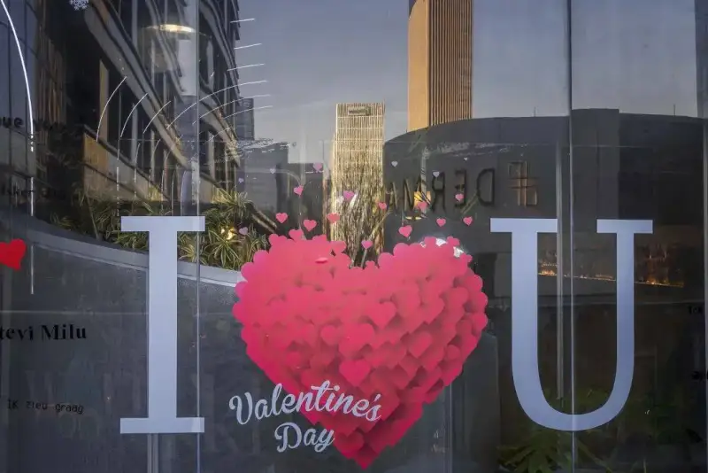
© Zou Yongjun, Xixing Road.
90X60cm. 10 works shown.
At the start of June last year, the provincial, city, and district associations held a symposium at the Xixing old street exhibition hall to discuss how to make the Starting from Xixing show. Later Teacher Zhang Hailong drafted the plan for the Starting from Xixing series. The overall idea is to use an image art show to express a logic:Start from Xixing, follow the water vein of the Eastern Zhejiang Canal, feel the cultural vein of the Tang Poetry Road of Eastern Zhejiang, and explore the life blood of Zhejiang's development. Follow the flourishing poetry road, trace the silk road that reaches river and sea, and fix the path toward common prosperity.。
Around this idea we plan three shows. First, today's artist-in-residence show Starting from Xixing, which expresses the town of Xixing. Second, at the end of September, the New Landscape photography show Most Memorable is Hangzhou, which expresses the city of Hangzhou. Third, we aim to hold the Eastern Zhejiang Canal poetry road photo show, which expresses the river of Eastern Zhejiang.
Around these three shows we also organized matching workshops.One workshop is the Eastern Zhejiang Canal creation camp, with Lu Guang as mentor, leading more than 20 photographers to dig and create along the canal since October 2 last year. It produced many good works. Another is run by the Binjiang federation, led by Teacher Shen Ke, organizing artist resident creation, and today's show is the result. The creation for the Hangzhou New Landscape show is also in full swing.
We feel that artist resident creation and the workshop or camp model are very effective for deeply mining culture and making fine art. A surface call for entries alone is not enough.
Today's show is a success. It is a major achievement for Binjiang photography, and a result of the joint effort and active exploration of the provincial, city, and district associations and all departments.
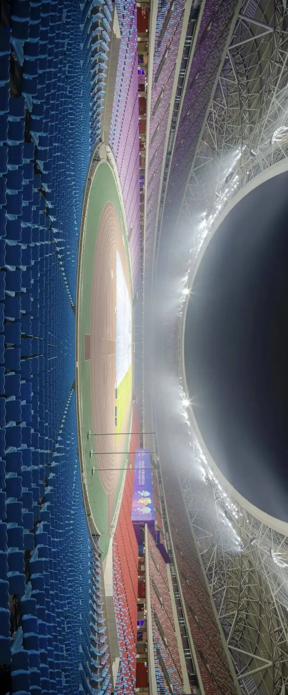
© Qin Youwei, Light of the Asian Games.
288X120cm. 7 works shown.
Host:Thank you, Chairman Zhang, for your kind words. Let us meet in the golden autumn and look forward to the Most Memorable is Hangzhou New Landscape show. Next, I want to greet Secretary-General Qi. I know you were seconded this year to the Hangzhou Asian Games Organizing Committee, blooming day by day with the Big Lotus, which sits right in Xixing subdistrict. You also kept up the organizing work for Starting from Xixing. Now, delayed by the pandemic, the Hangzhou Asian Games have been postponed, but the Asian Games spirit and landscape continue in this city. In this process, what touched you most?Starting from Xixing, what links can it make with the Asian Games?
Qi Xiangyang:After New Year 2022, I took my post at the Asian Games Village as assigned. Because the Games were delayed, I just returned to the federation this week. In five months at the village, my professional background put me in the culture and art center. Borrowing the closed-loop model of the Winter Olympics, we planned the cultural atmosphere and the cultural life before and after events for all athletes, media, and officials staying there.
Under the closed-loop rules, the more than 10,000 guests from Asian countries basically moved between two points: the village and the competition venues, along the route between. The village is on the south bank of the Qiantang, east of Wentao Road. Although it lies in Xiaoshan district, the route back and forth to the main stadiums, the Big and Small Lotuses, runs through the core of Binjiang. So the first thing every guest sees is the landscape of Binjiang.
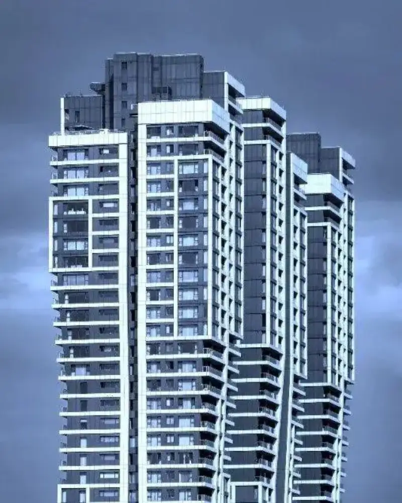
© Xing Jiaping (Hangzhou), Dreamlike Poem.
56X70cm. Cyanotype. 7 works shown.
So, starting from Xixing,Xixing will be more than Xixing, more than Binjiang. It becomes a byword for Hangzhou, for Zhejiang, and even for China.。
The leaders asked our center towiden our view and keep the copy from being narrow. We must not only offer Hangzhou elements, but also organically merge and show the fine folk culture of Hangzhou, the traditional culture of Zhejiang, and even excellent culture from across the country.
To control the pandemic, all drafts were built around closed-loop management, so the cultural spaces for guests were a bit tight. As an organizer for the city association, I suggest thatimages and objects combine organically,so that more content can be shown in rotation, freeing the most space for a simulated experience of traditional Chinese medicine culture and for interaction with fine folk crafts.
In today's high-tech age, when everyone reads images and everyone is their own media, display need not be only still pictures. It can fully use multimedia and VR, which are all forms of imaging. So imaging has great scope in building the cultural atmosphere of the Asian Games Village.
The Qiantang has been prosperous since ancient times. We also let the athletes of all countries start from Xixing, feel the city of Hangzhou through Binjiang, and witness the Zhejiang landscape on the road to common prosperity. In this way they recognize the strength and confidence of the Chinese nation. That is also the purpose of the Starting from Xixing artist-in-residence show.
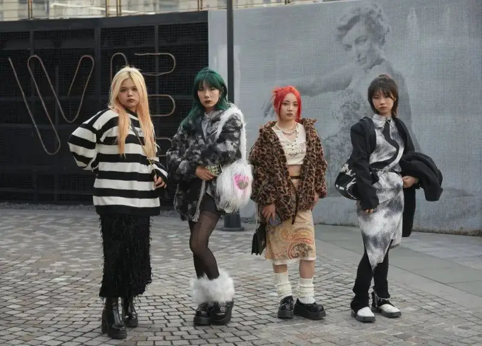
© Li Kang (Shanghai), Dialogue with Strangers.
120X80cm. 8 works shown.
Host:Both Secretary-General Qi and Teacher Mao mentioned a very important idea. Although Starting from Xixing takes a local stand, it must hold a global view. This was a key insight we reached last year when we dug into Xixing culture. Xixing is a small town, but many people do not know where Starting from Xixing truly leads. You must know the end of the Eastern Zhejiang Canal is Ningbo, which is exactly the start of the Maritime Silk Road. This is a very important insight for understanding the meaning and value of Starting from Xixing. You mustlook at the start and end of one river and one road together,and only then can you hold a true global view.
Hello, Teacher Shen Ke. I see this show, the Tang Poetry Road of Eastern Zhejiang: Starting from Xixing, has a very rich structure. It breaks the traditional linear display and instead circles around the point of Xixing in concentric rings, spreading out through Xixing people, Xixing walls, Xixing objects, strangers, and foreigners like ripples. What curatorial thinking do you want to convey? And viewers will ask: this show is called the Tang Poetry Road of Eastern Zhejiang, but why does it seem you cannot see the Tang Poetry Road of Eastern Zhejiang?The show is called the Tang Poetry Road of Eastern Zhejiang, but why does it seem you cannot see it?
Shen Ke:For curators, most of us are commissioned. The client already sets the topic. The curator's job is to do the homework for that topic. For example, when I first took on Starting from Xixing, I had to rethink the possible meaning of this cultural topic and the range it could extend to.
A curator is much like a tailor, or a cook. A good tailor thinks about the style, the fabric, and the right client,and only then can he make a classic suit. If he cannot control the fabric and the client is uncertain, the work gets hard. If the fabric and client are fixed, he can be ambitious and make the suit more refined, so that a better expert sees the value. A curator is also like a cook. A cook cares about raw ingredients, and a good cook uses them with his own understanding to find the most fitting way to cook.
We curators are very much like these two roles. First we serve a large theme. The shows we did in recent years are government-level themed and propaganda shows. Against that propaganda background, we must also join with artists, and ask howto use the artists' most forward angles of observation, their ways of thinking, and their creation with an international view,，and then combine that with the propaganda thinking of local party and government bodies,The room here is large, and the difficulty is large too.
As for today's show, the key point of Starting from Xixing lies in the concept of poetry. Chinese poetry has thousands of years of history. From the earliest poems in the Classic of Poetry to today, it has passed more than 3,000 years. Since then, painting, imaging, music, dance, and sculpture have always deliberately pursued a poetic quality.
So what exactly is poetic quality? How do you show a spiritual pursuit through concrete works? How do you join modern life, modern thought, or a contemporary way of life and attitude, with the centuries-old concept of poetry? This once troubled me. Of course, we have the well-known natural scenery along the poetry road, even a fixed way of explaining it. But how does poetry show up in our daily life? That is what I want to explore with you through this show.
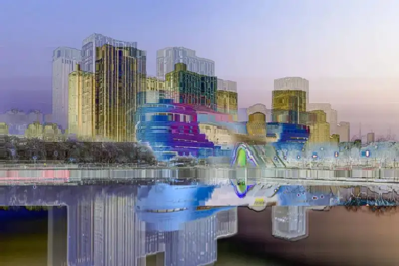
© Zhang Zheng (Wuhu), A Glimpse of Binjiang.
180X120cm. 6 works shown.
The old town of Xixing is the start of the Tang Poetry Road of Eastern Zhejiang. We used one hall, with six artists' works, to dig into it and tell the stories tied to Eastern Zhejiang Tang poetry.
But this alone is clearly not enough.The idea of Starting from Xixing opens up imagination with no end,and we can keep exploring along it. We start from Binjiang, this new land, which grew out of Starting from Xixing. Through a look at Binjiang's real life, such as the state of Binjiang people, its entrepreneurs, the foreigners who live in Binjiang, Binjiang girls, and the strangers walking its streets.
We explore the relation between these people's state and the poetic quality we speak of, to offer new angles. Entrepreneurs have special backgrounds, and those backgrounds give off a special force. They could not have come this far without a belief in poetry and the far horizon. This is the logic I found joining poetry with portraiture. Poetry is hidden at a deeper cultural level, not just in simple beauty.
Binjiang is a fast-growing new district, so it is inevitably full of steel, concrete, and glass towers. What relation do they have to poetry? This logic must also be dug up. The key point is the concentric ring. Whatever start you take, wherever it goes, its gene always carries the spirit and will of that origin point.
When we truly believe this, the way we see the world can change. For example, steel and concrete do have a rhythm of symmetry and balance. The walls of glass towers can also be a place that makes you dream. We gave up the simple logic of a linear display and spread outward from the origin of Xixing. In fact we want to define and open more possibilities for poetry and life.
Through architecture, portraiture, and the scenery along the poetry road, this show produces four dialogues: the Xixing dialogue, the poetry-road dialogue, the modern-city dialogue, and finally the front-line portrait, a dialogue with concrete, living ordinary people today, to tell the concept of Starting from Xixing.
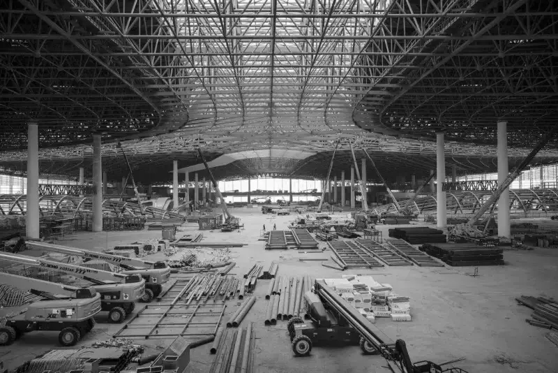
© Wang Dazhong (Hangzhou), Modern City.
250X165cm. 10 works shown.
Host:Thank you, Teacher Shen. The core element of this show is poetry. In fact, poetry itself is made from nothing, and that is its power.
For example, Du Fu, the sage of poetry that everyone knows, wrote: Two orioles sing amid the green willows, a line of white egrets rises to the blue sky. This is scenery you can see. But he immediately adds two lines: My window holds the eternal snow of the western ridge, my door moors the ships from the far-off east Wu. This is imagination made from nothing, which you cannot see. Besides, poetry is a power that turns stone to gold. Look at Mount Tianmu on the Tang Poetry Road of Eastern Zhejiang, an ordinary mountain until Li Bai wrote of it, and it passed down through later ages as an immortal piece. That is turning stone to gold. And in the end, poetry is something of which you can say it is good, but you cannot say exactly why.
Hello, Teacher Li Xiaojun. You are chairman of the Binjiang District Photographers Association, you have lived in Binjiang, and you know best what is good about Xixing. So how did you find the wonder of Xixing through your lens? Today's show is a delight. Before our eyes it builds an image of Xixing that carries the gene of common prosperity. It goes beyond the old traditional model of mainly shooting daily life in the old town. Instead it takes Xixing as the center point, links the line of the Eastern Zhejiang Canal, the Maritime Silk Road, and the Eastern Zhejiang poetry road, and draws out the slice of greater Hangzhou's common prosperity centered on the high-tech district of Binjiang. What are your thoughts and judgment?
Li Xiaojun:I both pushed resident creation forward, getting it going and sending it out, and took part myself, so I feel it deeply. First I thank the provincial and city associations for their strong support of the Binjiang association. I also thank the curator, Teacher Shen Ke, who gave enormous energy. Perhaps only those of us in the resident creation can feel how much heart Teacher Shen put into it.
Speaking of Starting from Xixing, let us get to know Xixing. I started working in Binjiang in 1999, more than 20 years ago. My first workplace was near Xixing old street, so I know the old street, yet I also feel a stranger to it. In the past I did not study Xixing's history and culture deeply. Through resident creation I did much homework again, and deepened my understanding of Xixing and its surroundings in Binjiang.
Xixing has more than 2,500 years of history. In the Spring and Autumn period of the Yue and Wu states, the Yue official Fan Li built a wall here to resist Wu, and the place took its name. It was then called Guling. Xishi dressed and groomed here before boarding a boat to be sent to the Wu kingdom. Today on Xixing old street there is still a place called Zhuang Pavilion. After the First Emperor unified China, he once went to Shaoxing to pay respects at the Yu mausoleum. One of his concubines, surnamed Zhang, died on the way and was buried at Jingshanwu near Xixing. Through the ages, poets who set foot on the landscape of Eastern Zhejiang could not skip Xixing. In the Tang dynasty, many scholars came to Eastern Zhejiang. Coming down from the north, they crossed the Qiantang to reach Xixing, and then went by the Eastern Zhejiang Canal into Shaoxing, Shengzhou, Xinchang, and Tiantai.
We understand that 278 poets who came to Eastern Zhejiang are recorded in the Complete Tang Poems. Along the way they wrote a great many fine poems, and so created the Tang Poetry Road of Eastern Zhejiang. 'I left home young and returned old, my accent unchanged, my hair thin. The children met me and did not know me, they smiled and asked, where do you come from?' The poet He Zhizhang, known to young and old, set out from Xixing to take office in Chang'an, and in his eighties returned home through Xixing.
Xixing has rich history and culture, and many historical sites remain. Learning Xixing's history led me to settle down and dig into its human side. So my main creation centers on Xixing people. Through their daily life I show the human warmth soaked into the plain air of the old street, and the everyday attitude of people in Xixing today. The poetry road is a concept of physical space. I thinkthe poetry road is not only rivers, mountains, and buildings. It can extend into a larger space, seek new meaning within old poetic feeling, and make the shift from surface to image.Through dialogue with the ancients, I find the breath that runs in one line with them, and so dissolve the calm faces of Xixing people into poetry.
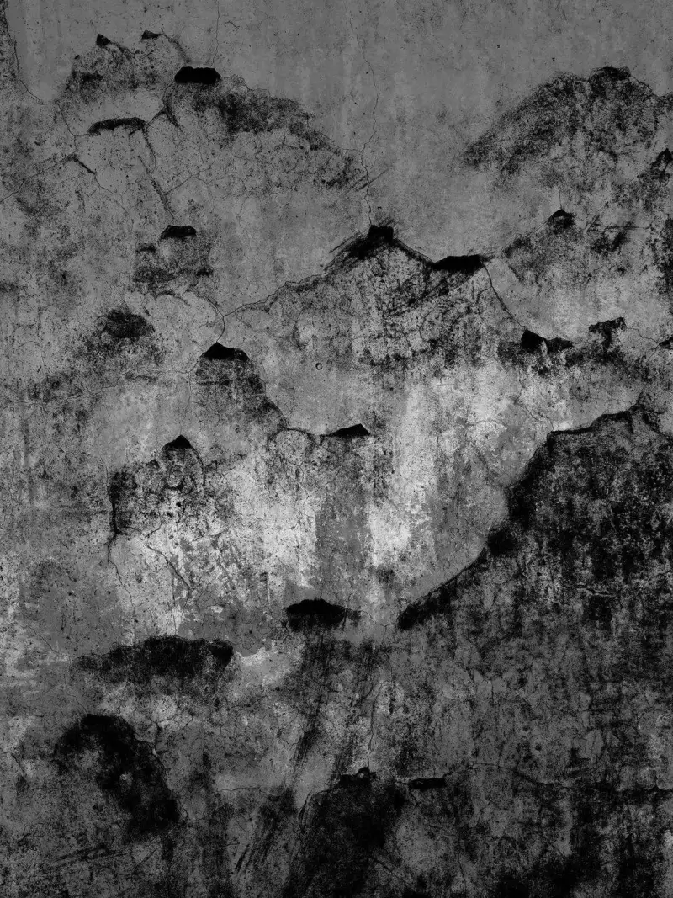
© Ye Wenlong (Taizhou), Poetry Road Landscape.
150X200cm. 7 works shown.
Host:Next I want each guest to start from Xixing, and send an invitation to the audience here and online, to continue this flowing feast.
Mao Xiaofang:Starting from Xixing, the provincial association has three important events this year. On August 30 at the Gongwang Art Museum in Fuyang there isthe Song-charm Third Image West Lake art event,a show well worth seeing. In November in Lishui there will bethe Second Zhejiang Photography Art Week,with very rich content: the 19th Zhejiang photography art show, the Zhejiang young art show, events of all kinds, a primary and secondary school photography show, shows from many institutions, and events run by image organizations. The third event, around October and November,the contemporary image show of the Ou River landscape poetry road,at the Zhejiang Exhibition Hall, is also a show well worth seeing. The shows in Hangzhou are rich and varied. You are welcome to see them in person.
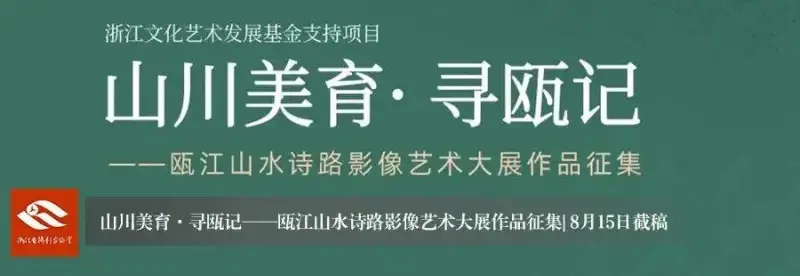
Zhang Youguo:I have two invitations. The first isto start from Xixing,and follow the Eastern Zhejiang Canal to Xiaoshan, Shaoxing, Yuyao, and Ningbo, even to the sea mouth. The creation camp for this river is still working, and there will be more creation events and work reviews. You are welcome to join. At the right time we will also hold a photography show tied to the Eastern Zhejiang Canal.
The second invitationis to join the New Landscape photography show Most Memorable is Hangzhou at the end of September. We hope Most Memorable is Hangzhou will be a different show, with character, a theme, and warmth. We warmly welcome you to take part in creation, and we are glad to support and back your work.
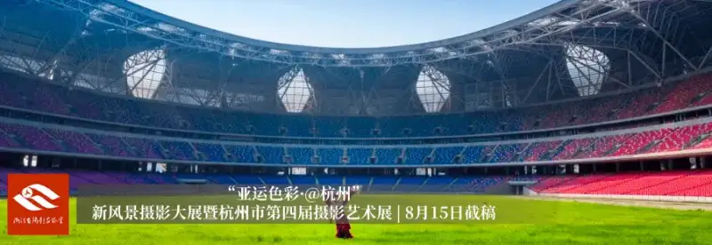
Qi Xiangyang:Starting from Xixing, let us see Xixing from outside Xixing. Starting from Hangzhou, let us see Hangzhou from outside Hangzhou. In recent years many key photographers have been keen to shoot many themes and built up large image sets, but they feel more or less stuck when it comes to editing. With the support of the city federation, we are preparing abook editing workshop,and invite skilled experts from across the country to answer our questions. We will post details through the Hangzhou Photographers Association official account. Friends who want to raise their photography, and especially their editing, are welcome to join.
Shen Ke:I send an invitationto artists with the ambition and ability to create. Although artist resident creation has a hundred-year history abroad, it is still not common in China. In the last decade it has appeared now and then in museums and galleries, but most residencies are not very long. This effective, flexible model that gathers artists to learn from one another and build joint force has now entered official institutional platforms in Zhejiang, and this is very valuable. Personally I think Zhejiang is again ahead here. Artist resident creation draws out artists' energy, borrows public resources, and then borrows the artists' influence and energy, and this model will bring a strong resonance. Today art and culture are multi-dimensional and plural at every level. Mass culture is rich in China, but what truly shapes the direction of an era is the thinking and action of the artist community. I invite all artists with ambition and ability to join the resident creation under Zhejiang's public-resource platform.
Li Xiaojun:I invite you to keep starting from Xixing, to come to Xixing, right here in Xixing. Xixing is one point. One route I recommend isfrom Xixing's 2,500-year history and culture to the Xixing Internet of Things park,which holds many high-tech firms and is a rich gold mine. A point further along is the Olympic Sports Center, the Big and Small Lotuses, where the Asian Games will be held in Xixing. As host, and as chairman of the Binjiang association, I sincerely invite you to come create in Xixing. You can walk into Xixing old street, into the Internet of Things park, and into the Big and Small Lotuses where the Asian Games are held, and make more fine works.
Host:Thank you, Teacher Li Xiaojun. The start returns to the end. We start from Xixing, and we return to Xixing. So I also make an invitation here. Teacher Pan Jie of the Yuhang District Photographers Association is also here. At the end of this year we will launch another important river in Hangzhou, the Tiaoxi image show. I look forward to you coming to see the Tiaoxi show hosted by the Yuhang association.